Four weeks reconstructing Ontario's road test routes from Reddit posts and dashcam videos, and everything that broke on the way.
If you've taken a road test in Ontario, you probably went looking for the route first. You'll have found a handful of sites that claim to show it. Some charge per centre. When I went through the main ones, none of them had real route data. The best-known paid site says in its own disclaimer that its free sample route isn't an actual test route. Another labels its map a schematic, not to scale.
The routes aren't secret, exactly. They just aren't published. DriveTest centres are run by Serco on behalf of the Ministry of Transportation, and the ministry doesn't release them. The information is scattered across the internet: people write up their test on Reddit, sometimes turn by turn, and instructors and test-takers upload dashcam recordings to YouTube.
So I built OntarioDriveTestMap (ontariodrivetestmap.fyi). It collects those accounts, turns them into routes on a real map, and shows how sure it is about every part of every route. This post covers how it works, what I built it with, and the long list of things that broke.
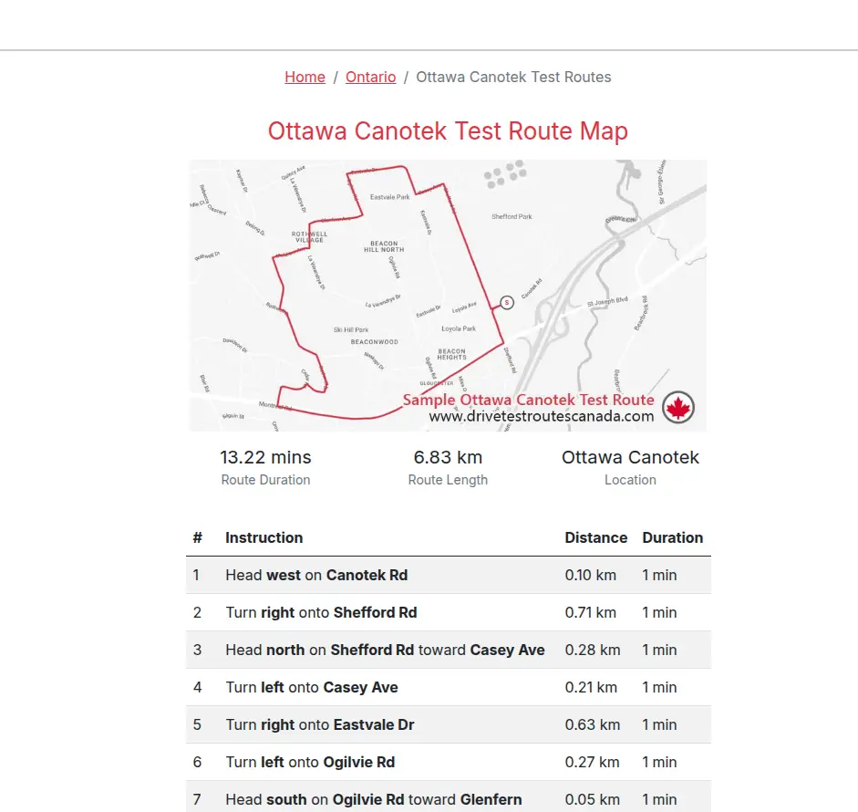
No single account of a route is trustworthy. A Reddit post covers part of the route. A dashcam video misses the first few minutes. Someone posts their own route, then pastes three more they got from YouTube. Nothing official confirms any of it.
The bet was that many weak accounts, handled honestly, add up to something useful. That only works if the site always shows its confidence. A segment that four independent people describe should look different from one that a single person mentioned once, and a road the software filled in should never look like a road someone actually reported.
I started with four centres: Walkley and Canotek in Ottawa, which have lots of public material, and Smiths Falls and Winchester, two small rural centres picked to test what happens when data is thin.
The plan on day one was Nominatim for geocoding, self-hosted OSRM in Docker, Postgres with PostGIS, Next.js with MapLibre, and Google Street View. Almost none of that survived.
What actually runs:
The constraints shaped all of it: a laptop with 7 GB of RAM, a budget of about $10 a month, and no ads.
The best change was dropping the geocoder. I wanted to turn "Walkley and Cedarwood" into a point on a map, and Nominatim doesn't understand intersections. It got two out of three right only by coincidence. But an intersection is just a point shared by two named roads, and that information is already in the map data. One pass over a 47 MB file of Ottawa gave me every junction and every street name, with offline, instant lookups. That same afternoon Nominatim half-worked, Overpass timed out and a mirror returned HTTP 500. Relying on free public services for the core of the pipeline was never going to hold up.
Reddit came first, and it failed three times in two days. The public JSON search endpoints returned 403. Then creating an API app failed silently: the form returned HTTP 200 with "success": true, and nothing appeared. I spent three guesses on form validation and ad blockers before reading the actual response body, which said app creation now needs approval. The approval request was rejected overnight. So I saved the threads by hand and parsed them offline. That turned out better anyway, because the saved pages had the full comment text that an earlier export had cut short.
YouTube had its own problems. All 112 Walkley videos came back with "no transcript", which looked like a finding. It was a library update that had changed its interface, plus an error handler that swallowed the error and returned "none". Even once transcripts worked, they were useless for routes. Drivers say "turn left here", not "turn left onto Heron Road".
That left reading street signs straight off the video. Colab could only download 144p, because YouTube serves datacenter IP addresses degraded video. So I split the job: download and extract frames at home, where a normal internet connection gets full 1080p, upload the frames, and run only the OCR on Colab's GPU.
These cost the most time, because each one looked like a result.
The first full OCR run reported 1,095 frames processed, zero with any text. That would have meant signs aren't readable from dashcam footage and the whole approach was dead. In fact three things were broken at once. The OCR library crashed on every single frame, and a bare except: continue hid all 1,095 crashes. Downscaling the frames destroyed the small text on street signs. And cropping to the top of the frame cut off signs that sit lower than I assumed. After fixing all three, the same video went from 2 street readings to 114.
The clue had been there from the start. Dashcam footage always contains some text, so "zero frames with any text" was physically impossible. The lesson I kept relearning: a number that's too clean is a bug report, not a finding.
Then there was the video that narrated itself. One Smiths Falls video burned an instruction for every turn into the picture, and OCR read them line by line into a complete route. That route matched, turn for turn, a Reddit account written by someone else.
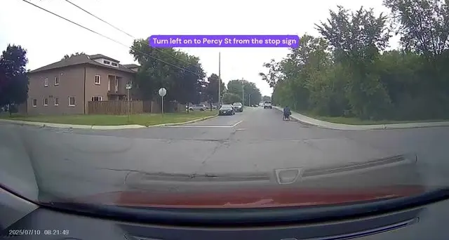
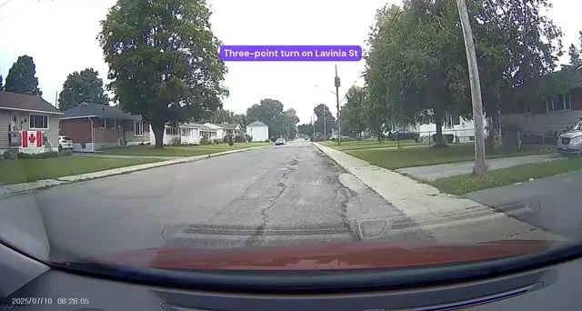
Burned-in captions from a Smiths Falls G2 recording. OCR turned them into a full route, which matched an independent Reddit write-up.
The first route I drew was missing a whole street. Every automated check said it was perfect: 10 of 10 junctions found, plausible length, no warnings. I caught it by looking at the map, because I know that neighbourhood and Fairlea Crescent wasn't on it.
Fixing it took five rounds. Walkley Road is a divided road, so a rule picked the nearest matching junction, and for a crescent you enter and leave, that collapsed both ends into one point. The fix for that fired on every turn. The next fix picked the wrong midpoint. Then a routing setting I'd added without thinking allowed a U-turn at every waypoint. A road test never asks for a U-turn.
Other bugs showed up the same way. The router happily joined two separate routes into one smooth, believable 15 km loop that went back to the test centre twice. Airport Parkway had only two junctions in the whole index, because highway ramps usually have no name and a rule built to count named roads was throwing them away.
Canotek, the second centre, found four bugs in one day that Walkley never could have. OpenStreetMap spells it Montréal Road while everyone types Montreal. "East" was being treated as filler, which broke East Acres Road. A lookup table with only one row kept falling back to Walkley, so every Canotek route resolved 12 km away. And a rule tuned on a 200 m crescent sent routes kilometres off course on long arterial roads.
Smiths Falls taught the next lesson before it had any data at all. The plan said all four centres were inside one map extract. When I actually checked, there were zero junctions anywhere near Smiths Falls, and nothing would have errored. Every account would have quietly failed, which looks exactly like the "not enough rural data" result I was supposedly testing for.
Street-name cleanup lived in five scripts under five different function names. The same bug turned up in each one: stripping "Parkway" off the end turned Airport Parkway into "airport", a completely different road inside the airport grounds. I fixed it locally every time, until the fifth occurrence made one script decide that "airport" and "airport parkway" were two competing streets at the same junction. The real fix was one shared module that everything imports. I should have made it the second time the bug appeared.
The best-supported street in the whole Walkley data set was Colliston: seven independent sources and fifteen video sightings. The route never turns onto it.
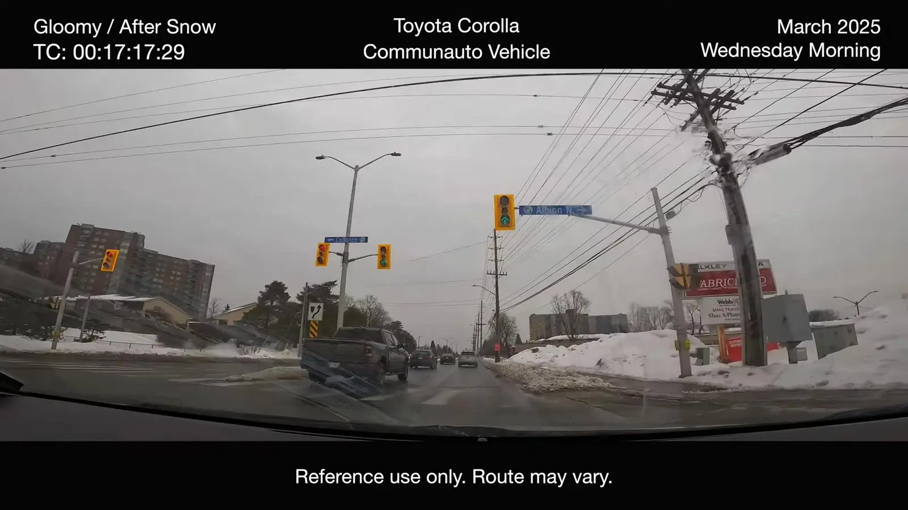
It passes straight through a signalised intersection whose overhead signs name both Colliston and Albion. The sign is real, the junction is real, and the OCR read is exact, so every filter on the video side lets it through. The only thing that separates it from a real turn is the text. None of the people who wrote out that route mentioned Colliston.
A camera records what it passes. A person records what they did. That one sentence changed how I thought about every source.
Some of the most useful evidence came as maps people had drawn on and shared. I read those by hand and checked every street pair against the index before using anything.
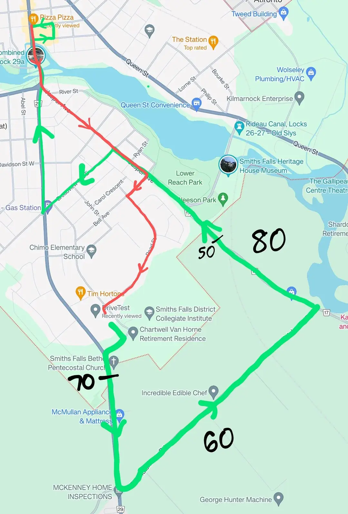
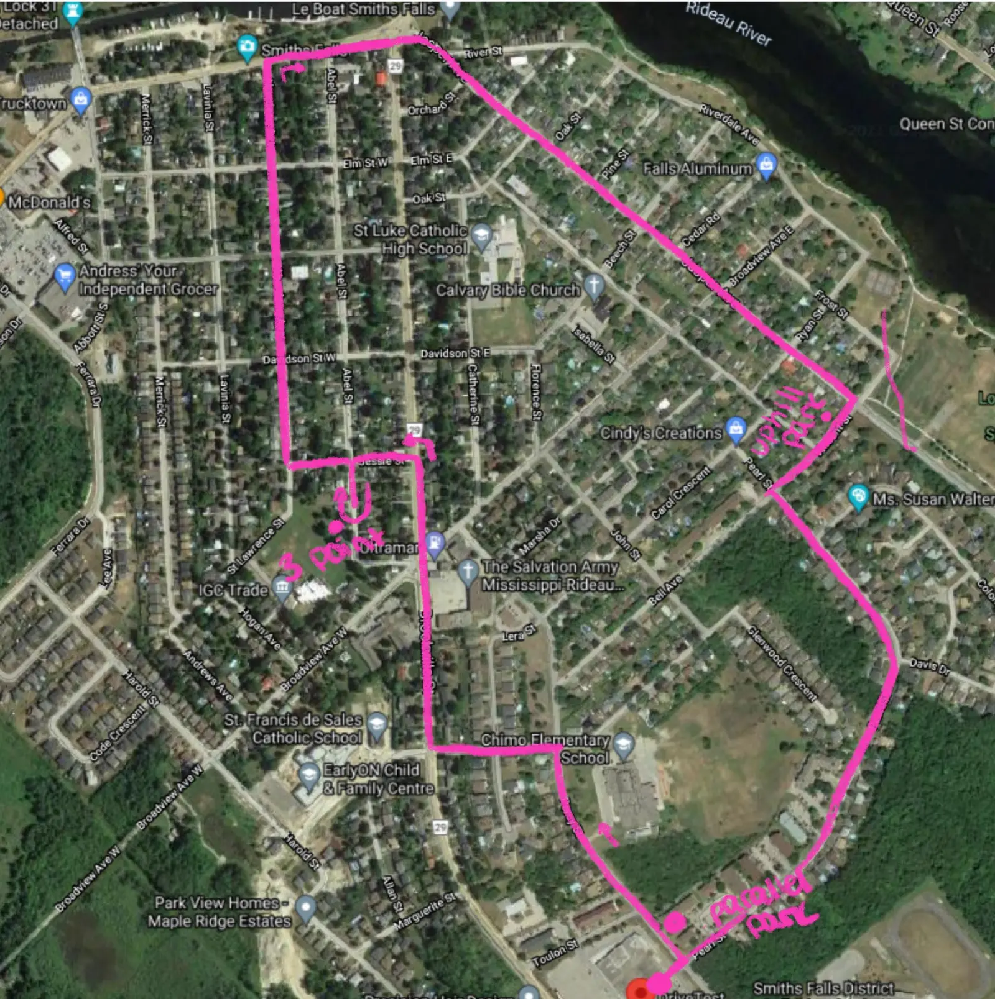
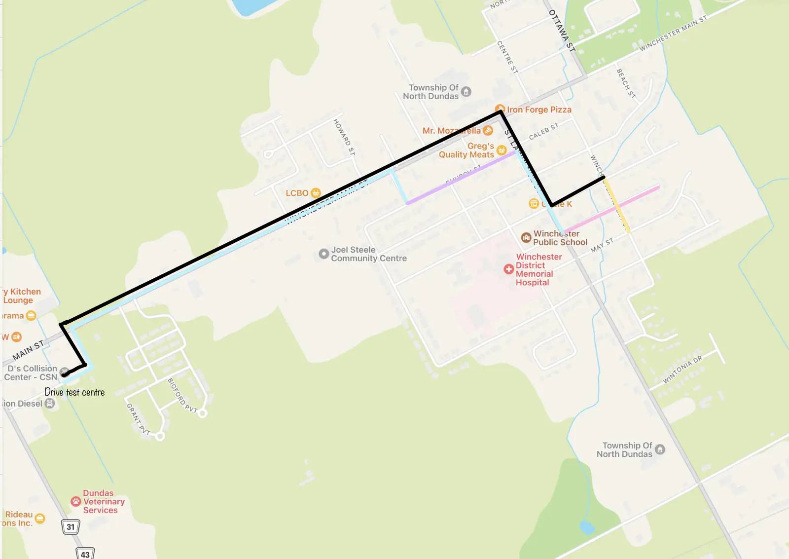
Winchester ended up skipped altogether. All 16 "Winchester" videos I ran through the full pipeline turned out to be from Winchester, England. The OCR picked up UK road names and driving schools, and one frame showed GPS coordinates in Hampshire. The Ontario town's own Reddit threads never named a single street.
Most of this project isn't code. It's deciding how much to trust what strangers wrote on the internet, and then checking whether those decisions were any good.
How much of the internet is usable. I saved 1,259 Reddit posts and comments, mostly about Walkley, from 532 different people. Only 18 of them, 1.4%, described a route in order with street names. Most were about nerves, booking, or which manoeuvre someone failed. For Canotek I searched on purpose instead of stumbling across posts, and the rate roughly doubled to 2.7%. Video was the opposite: once turned into a route, 0 of 20 video traces failed to match the road network, against 11 of 20 written ones. A camera passes every street. A person remembering their test skips the boring connecting ones.
How I scored it. There's no official answer to check against, so I used a trick called leave-one-out. Hide one person's account, build the route from everyone else, and see how much of the hidden account the rest predicts. Repeat for every account. The score is F1, which runs from 0 to 1 and rewards finding the right streets without adding wrong ones.
The threshold I guessed was badly wrong. Before I had any data, I decided a street needed a total evidence score of 1.5 to go on the map. When I finally measured it, that setting scored 0.64 at Walkley and zero at both Canotek and Smiths Falls, because nothing there ever reached 1.5. The best settings were far lower and scored 0.79, 0.56 and 0.91. At Walkley, my guess was throwing away 48 correct streets to avoid 22 wrong ones.
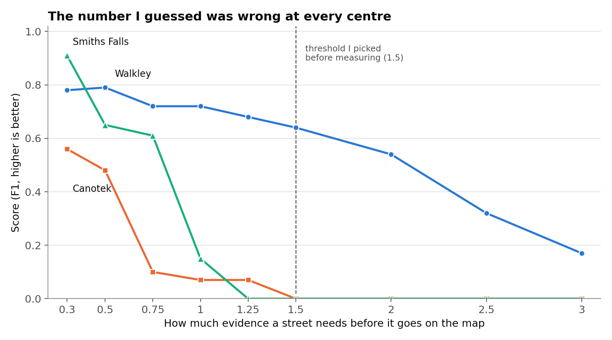
My clever weighting didn't beat simple counting. I'd built a scoring system that counts each person once, trusts video more than text, and discounts old posts. At Walkley it scored exactly the same as just counting how often a street is mentioned: 0.79 each. At Canotek it was worse, 0.56 against 0.77, because most Canotek posts are from 2021 and 2022 and my age penalty was crushing them. Relaxing the penalty (a 5-year half-life instead of 3) and adding more real posts brought it to 0.78 against 0.79. The two methods now differ by exactly five street segments, all from one older post that my system chose not to fully trust. So the weighting does something, but not much.
About one prediction in five is wrong in a way no setting fixes. At Walkley, precision (how many predicted streets are right) sat between 0.75 and 0.84 whatever I did. The biggest reason is streets like Colliston: real, correctly read, and never turned onto.
Splitting by route helped, until it didn't. A test centre runs several routes, and mashing them into one average predicts the minority routes badly. Grouping accounts into routes first raised Walkley's score from 0.79 to 0.88. But when I re-measured after collecting more data, the advantage had gone: both methods scored 0.74. With this few accounts, which route a post belongs to isn't stable enough to lean on.
The honest error bars are wide. Walkley's evaluation covers 171 street segments, but those come from only 13 people, and one person's posts tend to agree with each other. If every segment were independent, Walkley's 0.79 would be accurate to about plus or minus 0.05. If each person counts only once, the plausible range is anywhere from 0.54 to 0.91. The truth is somewhere in between. The real limit on this project isn't how many posts I can scrape. It's how many different people bothered to write their route down.
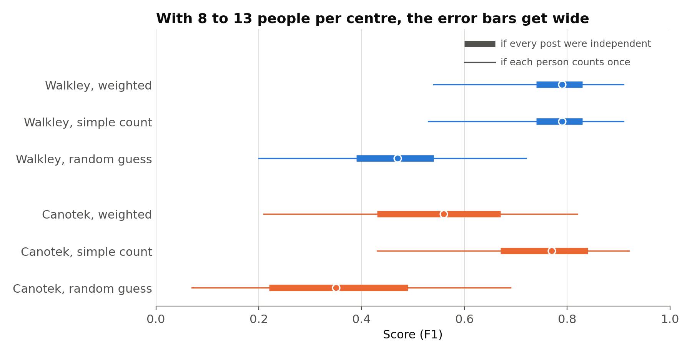
One last caveat. Everything above measures how well sources agree with each other, not whether they're right. If every camera reads the same sign the car drives past, they all agree, and they're all wrong. That's why the routes on the site today come from hand-checked video, with this crowd evidence underneath rather than in charge.
The first working version of the app was bare HTML: a list of centres and a map of blue dots.
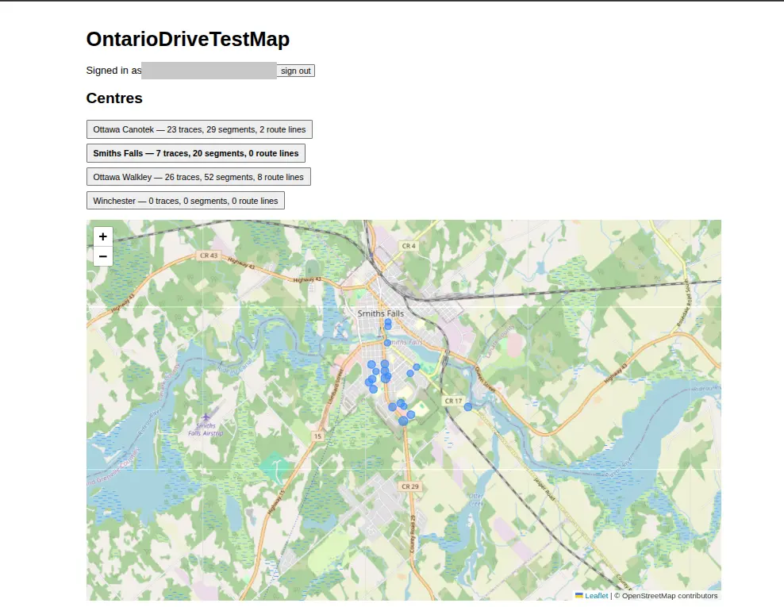
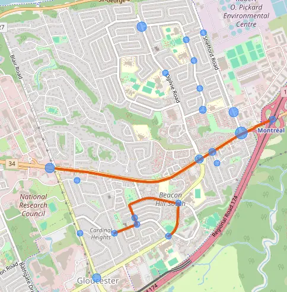
My first attempt to connect the dots drew straight lines between them. Those lines cut through blocks and buildings, so I reverted it.
The harder question was whether to connect confirmed points along real roads at all. Doing that draws road no source actually described, and a predicted turn that looks confirmed is more dangerous than one that's obviously wrong, because someone might drive it on their real test. I only allowed it with rules. Bridges connect only points already known to belong to the same route. The software uses as few bridges as possible, with a distance limit. Every bridge is flagged in the data, and bridges are drawn in a style that never looks confirmed.
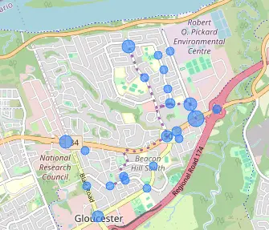
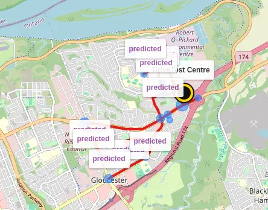
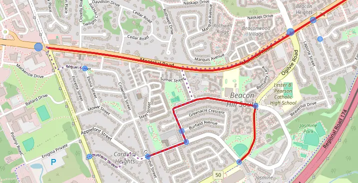
I also tried putting G and G2 side by side. The junction dots carry no test class, so both panels showed the same dots and it looked like a duplicate. It went back to one map with a switch.
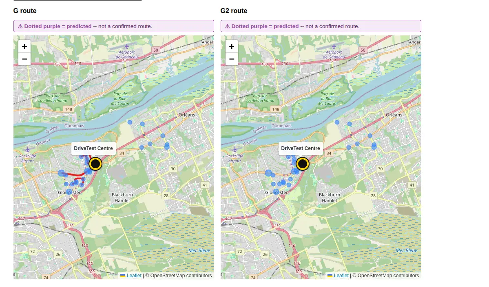
The turn-by-turn table had its own problems. Built straight from the router's steps, it said "Arrive at destination" every few rows, because the router treats every waypoint as a destination.
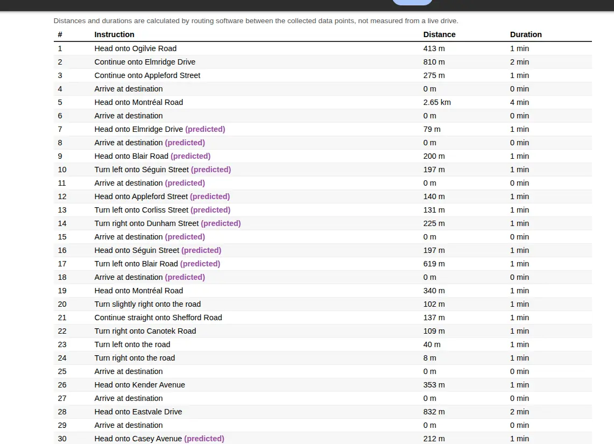
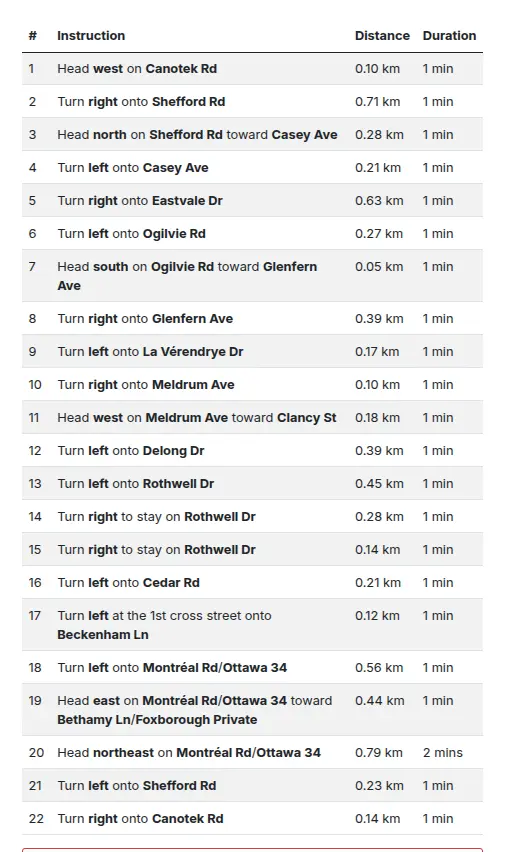
In the end, automatic clustering couldn't tell three short routes from one long route seen in pieces. So I transcribed real test videos street by street, by hand. That overturned the route counts I'd assumed: Walkley has three G routes, not one, and Canotek has two G and three G2. The 13 routes on the site now come from those transcriptions, routed on real roads, with the crowd-sourced evidence underneath. Stop signs, traffic lights and speed limits come from real OpenStreetMap tags, and each speed limit is looked up by location, because Walkley Road is 50 near the centre and 80 toward the airport.
The first backend deploy crashed three times in a row. There was no Python 3.13 build of the Postgres driver, the auth library needed a package that had only ever been installed by accident on my laptop, and the service had no environment variables at all.
Then the backend imported files from outside its own folder, including an 18.6 MB database that had never been committed, and Railway builds only that folder. The frontend served every page as the home page because of one flag on the static server. And the moment the site moved to its real domain, every user looked logged out after every click. The session cookie was blocked on cross-site requests, and it had only worked locally because two localhost ports count as the same site. The fix was putting the API on api.ontariodrivetestmap.fyi, the same site as the frontend, rather than loosening the cookie.
A security audit found one real problem. A public analytics endpoint accepted a page path that ended up unescaped in an admin email, which meant anyone could inject HTML into my inbox. That's fixed, along with rate limiting across the API and length limits on every text field.
Three centres and 13 routes, with turn-by-turn directions, real stop signs and speed limits, and numbered turn pins on the map. There's route playback, a mobile practice mode that follows your GPS in the car, community route submissions checked against the real road network as you type, a discussion board, and English and French. It's free, there are no ads, and you don't need an account to read anything.
Still open: a proper French review, Winchester, and a freedom-of-information request to the Ministry for current pass rates. Nothing on the map comes from the Ministry today.
Check the instrument before you believe the result. The worst bugs never crashed. They returned zero, or "none", or a route that looked right.
Look at the map. Automated checks measure what they were written to measure. A person who knows the area catches the missing crescent.
A new place is the best test. Every centre broke an assumption the last one hid.
When logic exists in two places, move it into one, the second time, not the fifth.
Make inference visible. Filling in a road is sometimes the right call, but only if it can never be mistaken for evidence.
And know when to stop auditing. Three sessions in a row ended with a longer to-do list than they started with. A fixed definition of "done" ended that in one step.
This post is the short version. Two longer write-ups cover the rest.
Building OntarioDriveTestMap ↗
The engineering story in 19 pages: planned stack against what was built, the architecture, a week-by-week timeline, and every failure grouped by kind, with what broke and what fixed it.
Estimating Road-Test Routes from Partial, Non-Independent Crowd Reports ↗
The statistics: the per-segment support estimator, leave-one-trace-out validation against frequency and random baselines at three centres, threshold sweeps, intervals under author dependence, the drive-past bias, and threats to validity.